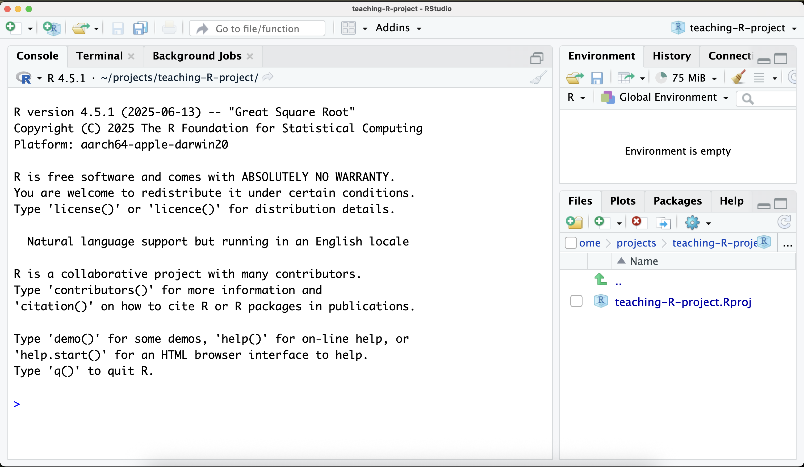

Setting up an R Project
We recommend using Rstudio to work with R. Rstudio is an IDE (integrated development environment) that makes it easier to write and run R code. R itself is a powerful programming language for statistical computing and graphics. R needs to be downloaded first, then RStudio.
If you are using a University of Bristol computer, you will find R and RStudio in Company Portal.
- Download and Install R:
- Visit CRAN and download R for your operating system.
- Follow the installation instructions.
- Download and Install RStudio: Visit RStudio Download and download RStudio Desktop.
Creating and Working Within a Folder
Create a Project Folder - In RStudio, go to File > New Project > New Directory. - Name your folder (e.g., myproject) and choose a location. - Click Create Project.
- Set Working Directory
RStudio automatically sets the working directory to your project folder, but just to make sure, type the following into the console, and press enter:
getwd()To set manually:
setwd("/path/to/myproject")Your Rstudio window should look as follows:

The console, shown in this window, is where you can type R commands and see the output immediately. This is good for interactive work, quick tests, and project setup. Simply type the R command you want to execute, and press enter to run it.
Writing and Running R Scripts
To write longer pieces of code, you can create an R script. Go to File > New File > R Script. This opens a new tab where you can write and save your R code.
::: ::: {.callout} ### RStudio Layout This will mean you have a script open in the top left pane of RStudio. You can write your R code here. The console should be below it, this is where you can see the output of your code or enter commands directly for exploration/experimentation. In the top right pane, you have your environment and history tabs. The environment tab shows you the variables and data frames you have created in your current R session. The history tab shows you a list of all the commands you have run in the console. And finally, in the bottom right pane, you have the files, plots, packages, and help tabs. The files tab shows you the files in your working directory. The plots tab shows you any plots you create. The packages tab shows you the R packages you have installed and loaded. And the help tab provides documentation for R functions and packages.
:::
Running Code
You can run the code in the script by highlighting it and clicking the “Run” button or pressing Ctrl + Enter (Windows) or Cmd + Enter (Mac). You can also click the “Source” button to run the entire script.
Make sure to save your script by going to File > Save or pressing Ctrl + S (Windows) or Cmd + S (Mac). Save it in your project folder with a .R extension, for example, analysis.R.
Installing and Managing Packages
For package installation, you can use the install.packages() function. For example, to install the ggplot2 package, you would run:
install.packages("ggplot2")You can install multiple packages at once by passing a character vector to install.packages(). For example:
install.packages(c("ggplot2", "dplyr", "tidyr"))Many people simply use the “install.packages()” function to install packages, but this does not ensure reproducibility. Instead, we recommend using the renv package to manage your R packages and their versions, and the DESCRIPTION file approach to record which packages you’ve installed. To install renv, run:
install.packages("renv")We also recommend installing the usethis package to help manage your project. `usethis includes great functionality for creating R-projects which follow standards.
install.packages("usethis")Initialise Environment
Initialize renv: This creates a new project environment. Essentially a folder where project specific packages are installed, a document that tracks the packages used in the project, and a way to reproduce the environment later.
renv::init()Create a DESCRIPTION File: This is a standard file in R that contains metadata about your project. The document created by
renvcontains a really long list of all packages used in the project, and the packages that those packages depend on! The DESCRIPTION file contains just a list of the packages you installed, making it easier for people to see what you’ve done. The template can easily be created using this commandusethis::use_description(check_name = FALSE)Install Packages from and add them to the description
usethis::use_package("ggplot2")Snapshot the Environment: After you’ve installed all your packages and added them to the DESCRIPTION file, you can create a snapshot of your environment. This will record the exact versions of all packages used in your project.
renv::snapshot()
This workflow helps you organize your project, manage packages reproducibly, and share your setup with others.